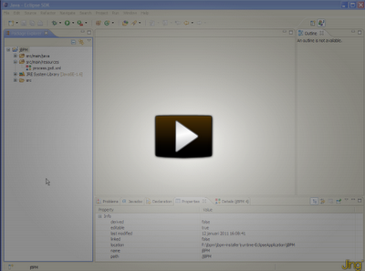

Migrating to jBPM5
Migrating your process definitions
If you’ve been using jBPM in the past, you’ve probably been using the proprietary jPDL language to represent your processes. With the arrival of BPMN 2.0 however, there now is a new standard for representing business processes. jBPM5 supports native execution of BPMN2 processes. This means however that your existing jPDL processes need to be translated to BPMN2 before they can be executed on the jBPM5 engine.
Most of the old jBPM node types can be mapped directly to an equivalent in BPMN2. For some features (for example the java callbacks), we might require you to choose between a few possible transformation, or to fill in additional details. That’s why we will be offering a tool for a one-shot semi-automatic transformation of jPDL processes to BPMN2.
The following screencast is a preview of what you can expect (in this case for a fully automatic transformation.) It shows how a simple jPDL process can be transformed into BPMN2 format, so that it can be executed on the jBPM5 engine.

Updating your integration code
You also need to update your integration code, i.e. how your application talks to the process engine. While the API to talk to the execution service itself hasn’t changed significantly, e.g. startProcess(..) or signalEvent(..), how you set up your session and deploy processes has been generalized. As a result however, jBPM is no longer an isolated process engine but your processes can be combined with powerful business rules and complex event processing! We’ll be documenting how you can migrate your existing integration code to the new API so you can start taking advantage of this.
At this point, we’re not planning to support runtime data migration. If you’re curently using jBPM3 in production, you shouldn’t be afraid to keep using it, as it currently is supported by JBoss and will be for many years to come. You can start developing new processes on jBPM5, and migrate your existing processes whenever you’re ready.
We have set up a migration project and Eric Schabell and Maurice de Chateau are already working hard to get the first transformations out there. You can find more information on their Wiki and Eric has also written a few blog entries about it. The migration project will initially focus on migration from jBPM3 to jBPM5. With a little community contribution however, it should also be possible to use the same approach to support jBPM4 to jBPM5 migration. So let us know if you want to help out! ;)